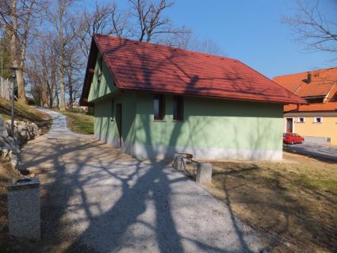

Plezalna stena
Nizka stena
Naša nizka plezalna stena (bolder) ima približno 140m2 plezalne površine.
Leto balvanske stene:

Visoka stena
Uporabljamo tudi visoko steno proizvajalca City Wall v športni dvorani. Velika je 11×3.3 m.